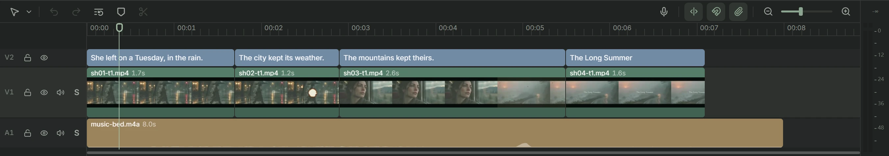

Your agent writes the film. You keep the cut.
Framino is the workbench between your coding agent and the video models. The agent writes the script, the storyboard and the shots. You open a real editor and work on it like an editor does: trim, move, rewrite subtitles, set levels, export. One project on disk — no import step, no second copy that can drift.

Not a mockup.
Framino Studio, opened on the project built below — 4 shots, 3 tracks, 5 clips, 7.1 s, revision ce0204c6b9.
Others stop at the download. Framino hands you the project.
The agent captures the brief, writes the script, designs the storyboard, calls the video model shot by shot, lands and validates the media, then assembles a project. You approve before anything is generated, and you edit after.
Every step writes to a manifest that doubles as a ledger. A task is recorded before the call, a task left running is resolved against the disk instead of being resubmitted, and every retry is a new take with a new file name — so nothing is overwritten and nobody pays twice.
The Long Summer — a title sequence, assembled by the adapter.
Four shots, two scenes, a caption track and a music bed. The manifest below was written by hand and
assembled by the real assemble() in packages/framino-production/src/adapter.mjs
— the same code path the tests exercise. The footage is cut from the cinema-open film that
ships in Framino's own library, so every asset records origin: "library" and no clip is
marked as a test fixture.
The Long Summer
Assembled, not mocked

What the adapter wrote — film.html
<!-- one section per track, top layer first --> <section data-framino-track="captions"> <track kind="captions" src="captions/film.vtt" srclang="en" label="English"> </section> <section data-framino-track="video"> <video id="sh01" src="assets/video/sh01-t1.mp4#t=0,1.7" data-shot-id="sh01" data-scene-id="sc01" data-asset-id="video-sh01-t1"></video> <video id="sh02" src="assets/video/sh02-t1.mp4#t=0,1.2" at="1.7" data-shot-id="sh02" …></video> </section> <section data-framino-track="music"> <audio id="music-bed" src="assets/audio/music-bed.m4a" volume="0.28" data-asset-id="music-bed"></audio> </section>
What the run reported
Assembling is a fixed point: the second run writes nothing, because the text it would write is the text already on disk. That is what makes it safe to re-run after an agent edit.
Two modes, one file. A change made by one is the state the other reads.
Agent mode — your coding agent creates and changes the project.
Studio mode — you review and edit by hand.
The Agent panel shows the project's real state — tracks, clips and revision read from disk — and the real event stream: film writes, exports, files, canvas, history. It does not pretend a conversation happened. In the browser Studio there is no chat of its own, and the panel says exactly that: an instruction composed there is copied for your agent, never presented as run.

Every number in that panel comes from the file.
1920 × 1080 · 3 tracks · 5 clips · revision ce0204c6b9 — read from film.html, not typed into a component.

Caption cues are generated from the shots, not typed twice. Each cue takes its shot id and lands on the film second its picture really starts at.
Everything in the timeline is a file you already have.
A film is a folder with a film.html: tracks of clips cut together, styled with CSS. The agent
already knows the web, so nothing new has to be learned — and nothing is locked behind a service.
Counted from packages/openfilm/library/ in this repository.
Node 22.18+, pnpm 9, git. ffmpeg for rendering.
The first render downloads a headless Chromium, about 100 MB — the same engine the preview draws with, so what you see is what you export.
$ git clone https://github.com/aircrushin/Framino $ cd Framino $ corepack enable $ pnpm install $ pnpm dev # Studio on 127.0.0.1:4848
$ openfilm open "/path/to/project" # Studio opens on it $ openfilm look # check the film $ openfilm render # the MP4 $ openfilm get video # media, shot by shot $ openfilm skills # what a film is made with
The AI makes an editable project, not a file.
That is the whole difference. A prompt-to-MP4 tool gives you something to download. Framino gives you something to keep working on — with the same agent, or by hand, or both.